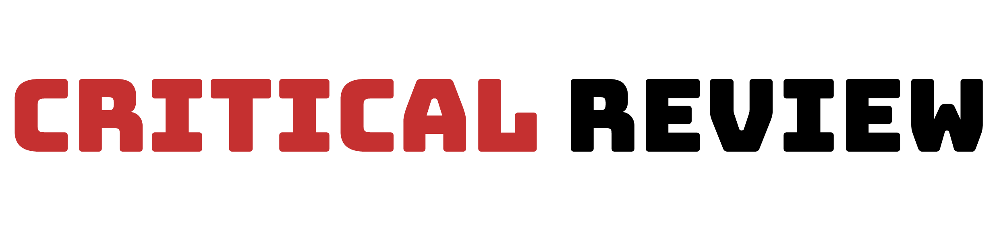

<section class="flex flex-col items-center gap-y-6 text-gray-300">
  
  <article class="flex max-w-2xl flex-col gap-y-6">
    <h1 class="text-2xl font-semibold">Critical Review</h1>
    <p>
      June brings with it another BCMX original - although we're tuning down the
      technicality quite a bit for this month!
    </p>
    <p>
      As our moniker tries to promote - we're in the business of trying to
      <i>gently coerce</i> everyone into playing various types of
      <i>better</i> games. But, who are we to say what is better and what isn't?
      This go around we're going to go by what the greater community deems
      <i>better</i>
      and tie the bonus into a games TA rating.
    </p>
    <p class="bg-slate-900 p-5">
      It's worth noting, that outside of the normal restrictions that will be
      detailed below - for any game to qualify for June's bonus it will need at
      least 2,000 tracked gamers and have at least a 3.75 rating on TA
    </p>
    <p>
      Outside of the above <b>important</b> stipulation - games will be awarded
      bonus points based on a combination of their BCMX value and their TA site
      rating.
    </p>
    <p>The bonus points system will work as follows:</p>
    <ul>
      <li>
        >3.75 Site Rating = 40% of BCMX value + (Site Rating % of BCMX Value)
      </li>
      <li>
        >4 Site Rating = 60% of BCMX value + (Site Rating % of BCMX Value)
      </li>
      <li>
        >4.5 Site Rating = 80% of BCMX value + (Site Rating % of BCMX Value)
      </li>
    </ul>
    <p>
      <a
        href="https://www.trueachievements.com/game/The-Witcher-3-Wild-Hunt-Complete-Edition"
        class="text-green-400 hover:underline hover:text-green-500"
        >The Witcher 3</a
      >
      is worth ~750 Base BCMX points and carries a very respectable site rating
      of 4.79 stars. It would receive a total bonus of 84.79% of it's BCMX
      value. (80% + Site Rating) The total bonus points for this game would then
      be 635 (in addition to the base score).
    </p>
    <h2 class="font-2xl font-semibold tracking-wider">
      But wait, there’s more!
    </h2>
    <p>
      Well, we covered what the BCM in our moniker is meant to represent, but
      what about the X? We'll just have to take a page out of the absolutely
      stable Elon Musk's playbook for this one.
    </p>
    <p>
      We are adding a community-focused goal to this event! Being the perfectly
      mature administrators that we are - we’re challenging you, as a community,
      to go <b>nice and high!</b>
    </p>
    <p>
      The goal, as a community, is to complete 69 games with a TA Site Rating of
      4.20 or above. Yes, we're serious. (Games must have at least 2,000 Tracked
      Gamers)
    </p>
    <p>
      Everyone’s completions will contribute towards this goal. And, if met,
      everyone who managed to complete a game rated 4.20 stars or above will
      receive 1,000 bonus points.
    </p>
    <p>
      These do not have to be unique games. For example, if three of you manage
      to complete the aforementioned
      <a
        href="https://www.trueachievements.com/game/The-Witcher-3-Wild-Hunt-Complete-Edition"
        class="text-green-400 hover:underline hover:text-green-500 inline"
        >The Witcher 3</a
      >
      it would count as 3/69, not 1/69.
    </p>
    <p>This is an all-or-nothing bonus pool.</p>
    <ul class="list-disc ml-4 mb-6">
      <li>
        For any completion to count towards this bonus the ratio must be at or
        above 1.5 and have a time estimate at or above 5-6 hours. [b]Or[/b] the
        time estimate must be at or above 20 hours regardless of ratio.
      </li>
      <li>
        Stacks will count as separate games due to technical restrictions.
      </li>
      <li>
        Any game released in June of 2024 will not qualify for this bonus.
        Additionally, any completion that is due to a new DLC or TU releasing in
        June of 2024 also will not qualify for this bonus.
      </li>
      <li>Games must have at least 2,000 Tracked Gamers</li>
      <li>Games must have a Site Rating of 3.75 or above</li>
    </ul>
  </article>
</section>
